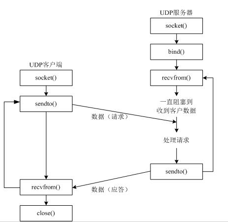
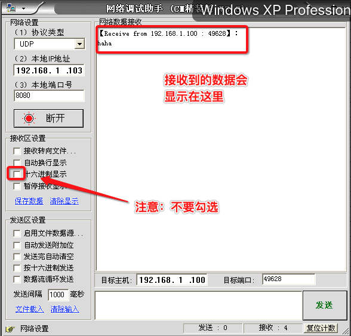

udp网络程序-发送数据
创建一个udp客户端程序的流程是简单，具体步骤如下：
- 创建客户端套接字
- 发送/接收数据
- 关闭套接字

代码如下：
# coding=utf-8
from socket import *
# 1. 创建套接字
udpSocket = socket(AF_INET, SOCK_DGRAM)
# 2. 准备接收方的地址
sendAddr = ('192.168.1.103', 8080)
# 3. 从键盘获取数据
sendData = input("请输入要发送的数据:")
# 4. 发送数据到指定的电脑上
udpSocket.sendto(sendData, str(sendAddr))
# 5. 关闭套接字
udpSocket.close()
运行现象：
在Ubuntu中运行脚本：
请输入要发送的数据: haha
在windows中运行“网络调试助手”：
